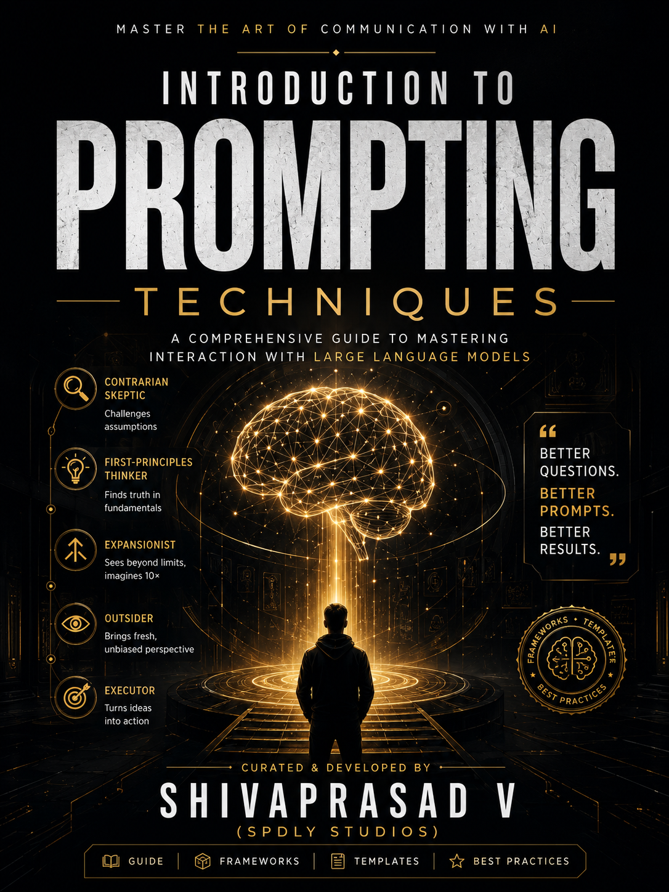

TOP 10 PROMPT TECHNIQUES.
Force AI to think structurally. Make it own its decisions. Strip away the fluff. A curated guide of the 10 techniques that actually change how you prompt.

02 — The Guide
No more fluff. Only structure.
Most AI prompts produce vague answers because they lack structure. This guide collects the 10 techniques that force large language models to think clearly, justify their reasoning, and commit to decisions instead of hedging.
Each technique is explained with the underlying principle, a ready-to-use template, and examples so you can apply it immediately. No theory without practice. No practice without theory.
"The difference between a useful prompt and a useless one is the difference between a system with constraints and a system without."
03 — The Techniques
Ten
principles
A preview of what's inside. The guide expands each into templates and worked examples.
Council of Five · Devil's Advocate · Thesis-Antithesis-Synthesis · Tree of Thoughts
SCAMPER · MECE Structuring · 5 Whys — Root Cause Chain
Morphological Analysis · Inversion Thinking · Six Thinking Hats
Selected for structural enforcement, decision commitment, and fluff removal. Every technique either adds reasoning scaffolding or removes ambiguity.
04 — Get the Guide
Open
the guide.
A single document containing all 10 techniques, templates, examples, and the thinking behind each one. Free to open and use.
docs.google.com/document/d/1VYy23SkkBMSrAanvyZ3FsQRPhSgKoXrzUVTuLiAA2D8